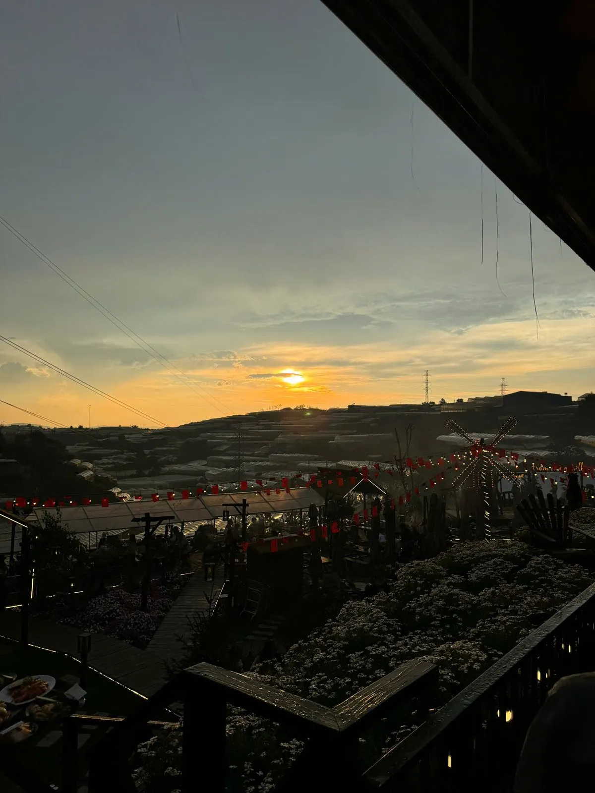
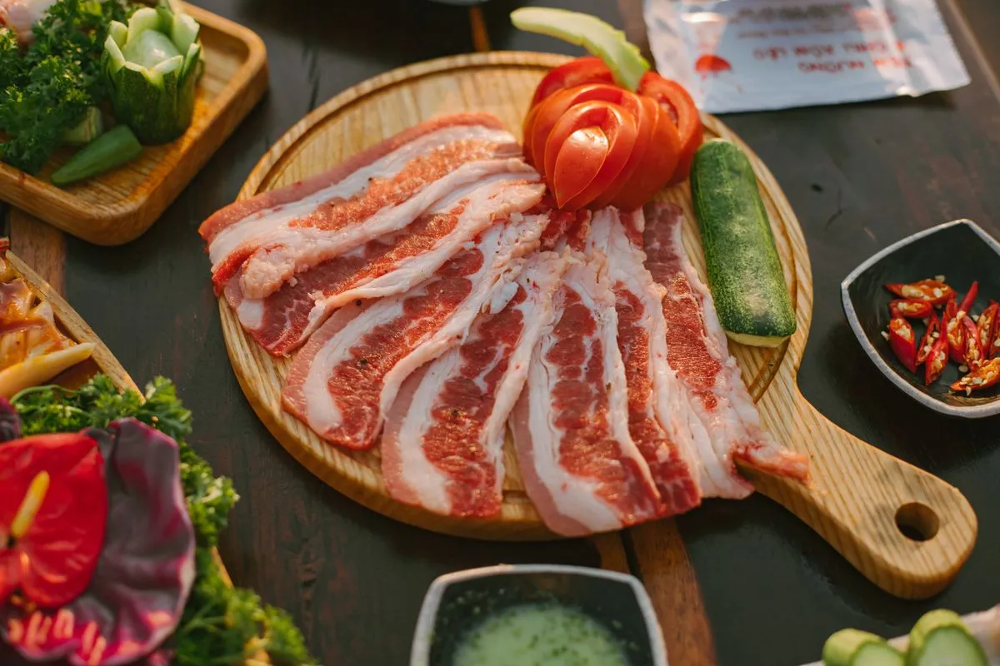

Vì sao cần đặt bàn trước ở Đà Lạt?
Các quán nướng view đẹp ở Đà Lạt thường rất đông vào cuối tuần và dịp lễ. Nếu không đặt bàn trước, bạn có thể phải chờ 30-60 phút hoặc không có chỗ view đẹp. Đặt bàn online giúp bạn chắc chỗ, chọn vị trí ưng ý.
Cách đặt bàn tại Trạm Dừng Chill
Trạm Dừng Chill hỗ trợ đặt bàn online cực nhanh: Bước 1: Vào website, điền form đặt bàn (số người, ngày giờ, yêu cầu đặc biệt). Bước 2: Nhận xác nhận qua Zalo trong 15 phút. Bước 3: Đến quán đúng giờ, được dẫn đến bàn đã đặt.

👉 Đặt bàn ngay — xác nhận trong 15 phút

Mẹo đặt bàn có view đẹp
Đặt trước 1-2 ngày, nhất là cuối tuần. Ghi chú yêu cầu "bàn view hoàng hôn" hoặc "bàn view nhà lồng". Đến trước giờ đặt 15 phút để được chọn vị trí tốt nhất. Đặt lúc 16:30-17:00 để bắt trọn hoàng hôn.

Các kênh đặt bàn phổ biến ở Đà Lạt
Website quán, Zalo, Facebook Messenger, điện thoại trực tiếp. Nhiều quán ở Đà Lạt chưa có hệ thống đặt bàn online — Trạm Dừng Chill là một trong số ít quán có form đặt bàn chuyên nghiệp trên website.
Kết luận
Đặt bàn online giúp bạn chắc chỗ, có view đẹp, không phải chờ. Đặt bàn Trạm Dừng Chill ngay — xác nhận nhanh trong 15 phút!